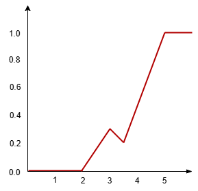
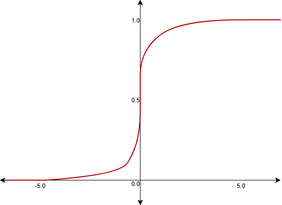

Tasks
CDF
CDF Properties
CDF to PMF/PDF
Properties of CDF
Instructions
Procedure:
You are shown 4 graphs. You have to verify if they satisfy all properties of a valid CDF.
First, click on a graph to select it. The selected graph will be highlighted.
Then, select the property that you think the graph violates from the list on the right.
If it satisfies all properties, select the last option.
Your result will be displayed in the observation panel.
1. Uniform Discrete RV with \(x = \{1,2,3,4,5\}\)
2. Binomial Discrete RV with \(n = 5, p > 0.5\)
3. Uniform Continuous RV with \(a = 2, b = 5\)

4. Normal Continuous RV with \(\mu = 0, \sigma = 2\)

Verifier
No graph selected.
Violates Property 1: Limits at \(-\infty\) and \(+\infty\)
Violates Property 2: Non-decreasing
Violates Property 3: Right-continuous
Satisfies all properties
Observation
Select a graph and then choose an option.